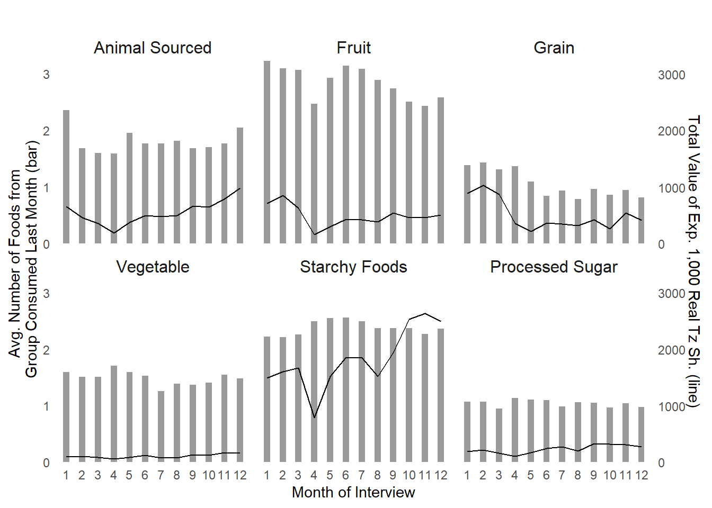

R code for data visualization in economics, created and maintained by DIME Analytics.
# Initial settings =======================================================================================
# List all packages needed for this code
packages <-
c("tidyverse",
"haven",
"grid",
"gridExtra",
"cowplot",
"huxtable"
)
# Load packages (package pacman must be installed for the next line to run)
pacman::p_load(packages,
character.only = TRUE,
install = TRUE) # Change to install argument to TRUE to install the required packages
# Load and explore data =================================================================================
data <- read_dta("https://github.com/worldbank/r-econ-visual-library/raw/master/Library/Data/BarPlotsCombineTwoAxes.dta")
data %>%
sample_n(10) %>%
as_hux| int1mo | food_group | consumed | number_group | total_exp |
|---|---|---|---|---|
| 7 | fats | 0.198 | 0.793 | 108 |
| 8 | other | 0.0737 | 0.476 | 126 |
| 11 | spices | 0.775 | 1.55 | 117 |
| 4 | animal | 0.199 | 1.6 | 192 |
| 1 | spices | 0.788 | 1.58 | 82.4 |
| 8 | fats | 0.168 | 0.672 | 89.1 |
| 10 | fats | 0.191 | 0.762 | 127 |
| 8 | spices | 0.844 | 1.69 | 82.2 |
| 1 | beverages | 0.12 | 0.239 | 49.8 |
| 3 | nut_pulse_seed | 0.187 | 0.561 | 131 |
# Wrangle data to create graph ========================================================================
fig_data <-
data %>%
# Filter data to the groups of interests
filter(food_group %in% c('animal', 'fruit', 'grain', 'veg', 'starch', 'processed_sugar')) %>%
# Relabel food groups
mutate(food_group = recode_factor(food_group,
animal = 'Animal Sourced',
fruit = 'Fruit',
grain = 'Grain',
veg = 'Vegetable',
starch = "Starchy Foods",
processed_sugar = 'Processed Sugar'))
# Check result
fig_data %>%
sample_n(10) %>%
as_hux| int1mo | food_group | consumed | number_group | total_exp |
|---|---|---|---|---|
| 2 | Starchy Foods | 0.369 | 2.22 | 1.61e+03 |
| 10 | Fruit | 0.278 | 2.51 | 464 |
| 11 | Grain | 0.215 | 0.95 | 548 |
| 9 | Grain | 0.211 | 0.969 | 426 |
| 11 | Processed Sugar | 0.347 | 1.04 | 317 |
| 11 | Fruit | 0.271 | 2.44 | 460 |
| 9 | Animal Sourced | 0.21 | 1.68 | 670 |
| 9 | Starchy Foods | 0.396 | 2.37 | 1.94e+03 |
| 2 | Grain | 0.312 | 1.43 | 1.03e+03 |
| 12 | Starchy Foods | 0.393 | 2.36 | 2.49e+03 |
# Create graph =========================================================================================
ggplot(fig_data) +
# Plot bars with number of items consumed
geom_bar(aes(x = as.factor(int1mo),
y = number_group),
stat = "identity",
alpha = .6, # transparency
width = .4 # bar width
) +
# Add line with expenditure
geom_line(aes(x = int1mo,
y = total_exp / 1000)) +
# Create a second axis with sec.axis
scale_y_continuous(sec.axis = sec_axis(~.*1000,
name = "Total Value of Exp. 1,000 Real Tz Sh. (line)"),
expand = c(0, 0)) +
# Add different subplots for each food group
facet_wrap(~food_group,
strip.position = "top") +
theme_classic() +
labs(title = "",
x = "Month of Interview",
y = "Avg. Number of Foods from \n Group Consumed Last Month (bar)") +
theme(plot.title = element_text(hjust = 0.5),
axis.ticks = element_blank(),
axis.line = element_blank(),
strip.background = element_blank(),
strip.text = element_text(size = 12),
strip.placement = "outside")